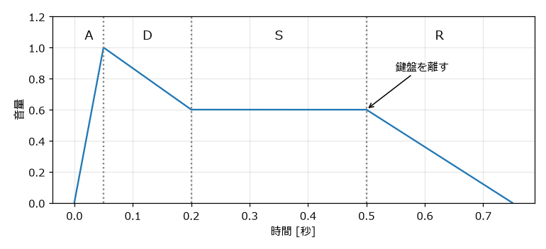
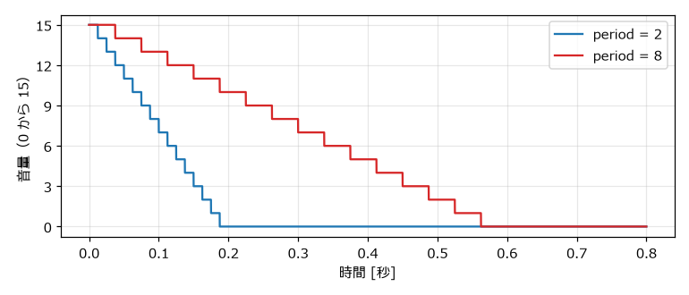
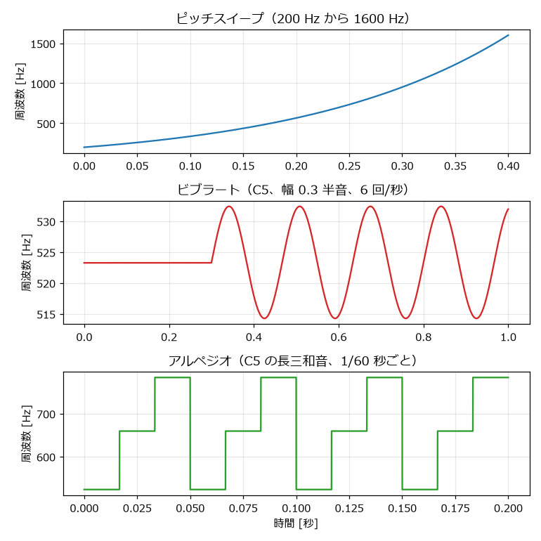

7. 音を形づくる
前の章で作った波形は、一定の高さ・一定の大きさで鳴り続けるだけの音であった。実際の楽器や効果音では、音量や音程が時間とともに変化する。この章では、音量・音程・音色を時間とともに変化させて、音に表情を付ける方法を学ぶ。
扱う関数はすべて envelope.py にある。どの関数も、1 サンプルごとの音量または周波数を並べた配列を返す。音量の配列は波形に掛け算し、周波数の配列は phase_from_frequency に渡して使う。
7.1. 音量の変化（エンベロープ）
7.1.1. ADSR エンベロープ
音量の時間変化をエンベロープという。シンセサイザーでは、エンベロープを次の 4 つのパラメータで表すことが多い。頭文字をとって ADSR と呼ぶ。
パラメータ |
意味 |
|---|---|
Attack（アタック） |
鳴らし始めてから最大音量に達するまでの時間 |
Decay（ディケイ） |
最大音量からサステインの音量まで下がる時間 |
Sustain（サステイン） |
鍵盤を押している間、保ち続ける音量（時間ではなく音量の割合） |
Release（リリース） |
鍵盤を離してから音量が 0 になるまでの時間 |


図 7.1 ADSR エンベロープ
アタックが短いと音の立ち上がりがはっきりし、長いとふわっと鳴り始める。ディケイが短くサステインが低いと、弾いた瞬間だけ強く鳴る歯切れのよい音になる。
18def adsr(attack: float, decay: float, sustain: float, hold: float, release: float) -> Signal:
19 """ADSR エンベロープを作る.
20
21 attack 秒で 0 から 1 へ上がり、decay 秒で sustain の音量まで下がる。
22 その音量を hold 秒保った後、release 秒で 0 に戻る。
23 """
24 times = np.cumsum([0.0, attack, decay, hold, release])
25 levels = [0.0, 1.0, sustain, sustain, 0.0]
26 t = np.arange(seconds_to_samples(float(times[-1]))) / SAMPLE_RATE
27 return np.interp(t, times, levels)
np.interp(t, times, levels) は、折れ線グラフの頂点（times と levels の組）を直線で結び、時刻 t での値を求める関数である。np.cumsum で各区間の長さから頂点の時刻を求めている。
エンベロープなし
ADSR エンベロープあり
7.1.2. ファミコン風の減衰
「音源チップの仕組み」で説明したとおり、ファミコンの矩形波とノイズのエンベロープは、音量 15 から 1 段階ずつ下がっていく。この動作をそのまま再現する。
30def nes_decay(seconds: float, period: int) -> Signal:
31 """ファミコンの矩形波・ノイズが持つ減衰エンベロープを再現する.
32
33 音量は 15 から始まり、毎秒 240 回のクロックが (period + 1) 回来るたびに
34 1 ずつ下がって 0 で止まる。period は 0 から 15 の整数である。
35 """
36 t = np.arange(seconds_to_samples(seconds)) / SAMPLE_RATE
37 level = 15.0 - np.floor(t * 240.0 / (period + 1))
38 return np.maximum(level, 0.0) / 15.0
経過時間 t に 240 を掛けるとクロックの回数になり、それを period + 1 で割って切り捨てると、下がった段階の数になる。図 7.2 のように、音量は階段状に下がる。


図 7.2 ファミコン風の減衰エンベロープ
減衰が速い（period = 2）
減衰が遅い（period = 8）
7.1.3. 音量を 16 段階に丸める
ADSR のように滑らかに変化するエンベロープを使う場合も、16 段階に丸めるとファミコンの音量の粗さを再現できる。
41def quantize_volume(envelope: Signal, levels: int = 16) -> Signal:
42 """音量を 4 bit（16 段階）のような粗い段階に丸める."""
43 return np.round(envelope * (levels - 1)) / (levels - 1)
音量が大きいうちは段階の差はほとんど聞き分けられないが、音が小さくなって消えていく部分では、段階的に音量が下がる 8 bit サウンドらしい響きになる。
7.2. 音程の変化
7.2.1. ピッチスイープ
音程を連続的に上げ下げすることをピッチスイープという。ジャンプやレーザーなど、多くの効果音の基本になる。
人間の耳は、周波数の差ではなく比で音程を感じ取る。200 Hz から 400 Hz への変化と、800 Hz から 1600 Hz への変化は、どちらも 1 オクターブの上昇として同じ幅に聞こえる。そのため、周波数を直線的に変化させると、高い側で音程の変化が遅く聞こえてしまう。音程として均等に変化させるには、周波数を指数関数的に（一定の比率で）変化させる。
46def exponential_sweep(start: float, end: float, seconds: float) -> Signal:
47 """周波数を start から end へ指数関数的に（音程として均等に）変化させる."""
48 return np.geomspace(start, end, seconds_to_samples(seconds))
np.geomspace は、隣り合う要素の比が一定（等比数列）になる配列を作る関数である。
上昇するスイープ（200 Hz から 1600 Hz）
下降するスイープ（1600 Hz から 200 Hz）
7.2.2. ビブラート
音程を周期的に細かく揺らすことをビブラートという。長く伸ばす音にビブラートをかけると、音に生き生きとした表情が出る。揺れの幅を \(D\) [半音]、1 秒あたりの揺れの回数を \(r\) とすると、周波数は次の式で表せる。
\(2^{x/12}\) は \(x\) 半音分の周波数の比である。実際の演奏では、音を鳴らし始めてから少し遅れてビブラートをかけることが多いため、遅延時間 delay を指定できるようにしている。
51def vibrato(frequency: float, seconds: float, depth: float, rate: float, delay: float = 0.0) -> Signal:
52 """ビブラート（音程の周期的な揺れ）をかけた周波数を返す.
53
54 depth は揺れの幅 [半音]、rate は 1 秒あたりの揺れの回数である。
55 delay 秒が経過するまでは揺らさない。
56 """
57 t = np.arange(seconds_to_samples(seconds)) / SAMPLE_RATE
58 swing = depth * np.sin(2.0 * np.pi * rate * np.maximum(t - delay, 0.0))
59 return frequency * 2.0 ** (swing / 12.0)
ビブラート（幅 ±0.3 半音、6 回/秒、0.3 秒後から）
7.2.3. アルペジオ
「8 bit サウンドとは」で述べたように、チャンネル数が限られた音源では、和音の構成音を素早く切り替えて 1 チャンネルで和音のように聞かせる手法が使われた。これを本書ではアルペジオと呼ぶ。音楽一般では和音を 1 音ずつ順に弾く奏法をアルペジオというが、8 bit サウンドでは、1/60 秒程度の非常に短い間隔で切り替えるため、個々の音ではなく、震えるような 1 つの和音に聞こえる。
62def arpeggio(root: int, offsets: list[int], seconds: float, step: float = FRAME) -> Signal:
63 """root（MIDI ノート番号）から offsets 半音ずつ離れた音を step 秒ごとに切り替える.
64
65 1 チャンネルで和音のように聞かせる「アルペジオ」の手法である。
66 """
67 t = np.arange(seconds_to_samples(seconds)) / SAMPLE_RATE
68 index = np.floor(t / step).astype(np.int64) % len(offsets)
69 notes = root + np.array(offsets)[index]
70 return 440.0 * 2.0 ** ((notes - 69) / 12.0)
offsets には根音からの半音数を指定する。長三和音なら [0, 4, 7]、短三和音なら [0, 3, 7] である（「最低限の音楽知識」を参照）。時刻を切り替え間隔 step で割った商を、構成音の数で割った余りが、その時点で鳴らす構成音の番号になる。
アルペジオ（C の長三和音）
アルペジオ（C の短三和音）
図 7.3 に、ピッチスイープ、ビブラート、アルペジオの周波数の変化を示す。


図 7.3 ピッチスイープ、ビブラート、アルペジオの周波数の変化
7.3. 音色の変化（デューティ比の切り替え）
矩形波のデューティ比を時間とともに切り替えると、音色が揺れ動くような効果が得られる。pulse_wave 関数はデューティ比に配列を受け取れるので、1 フレームごとのデューティ比を並べた配列を渡せばよい。
112 # 1 フレームごとにデューティ比を切り替える
113 seconds = 1.0
114 num_samples = seconds_to_samples(seconds)
115 frame_index = np.floor(np.arange(num_samples) / SAMPLE_RATE / FRAME).astype(np.int64)
116 duty = np.array([0.125, 0.25, 0.5, 0.25])[frame_index % 4]
117 sounds["duty_switch"] = pulse_wave(phase_from_frequency(c5, num_samples), duty)
各サンプルが何フレーム目に当たるかを frame_index として求め、4 フレームで一巡するデューティ比の並び 12.5 %、25 %、50 %、25 % から値を取り出している。
デューティ比の切り替え
7.4. 疑似エコー
エコー（やまびこのような残響）は、遅らせて小さくした同じ音を重ねることで作れる。ファミコンには残響を作る回路がないため、空いているチャンネルで同じメロディを少し遅らせ、音量を下げて鳴らす方法が使われた。
73def pseudo_echo(signal: Signal, delay: float, gain: float, repeats: int = 2) -> Signal:
74 """遅らせて小さくした同じ音を重ね、エコーのように聞かせる."""
75 offset = seconds_to_samples(delay)
76 result = np.concatenate([signal, np.zeros(offset * repeats)])
77 for n in range(1, repeats + 1):
78 result[offset * n:offset * n + signal.size] += signal * gain ** n
79 return result
gain ** n により、n 回目の繰り返しほど音が小さくなる。
エコーなし
エコーあり（0.2 秒遅れ、音量 0.4 倍ずつ）
この関数は 1 つの配列に元の音とエコーを足し合わせているので、1 チャンネルで同時に複数の音が鳴っていることになり、「1 チャンネルは同時に 1 音」という実機の制約を超えている。実機と同じ制約で作る場合は、エコー用にチャンネルを 1 つ確保する必要がある。
7.5. 三角波の表現
三角波チャンネルは音量を変えられないため、エンベロープによる表現ができない。三角波で音の区切りをはっきりさせるには、音を短めに切り、次の音との間に短い休符を挟む。次の音は、0.18 秒鳴らして 0.07 秒休む、を繰り返した三角波のベースである。
三角波のベース
三角波の音量が一定であることは、ベースの音量をそろえやすいという利点にもなる。「BGM を作る」の作例でも、ベースには三角波を使う。
7.6. 複数の音を重ねる
複数の音を同時に鳴らすには、配列を足し合わせればよい。このとき、足し合わせた結果が -1.0 から 1.0 の範囲を超えると、WAV ファイルへの書き出し時に切り詰められて（クリッピング）音がひずむ。
これを防ぐには、各音に 1 より小さい係数を掛けてから足すか、足し合わせた後に全体の音量を調整する。wav_io.py の normalize 関数は、最大の振幅が指定した値になるように全体の音量をそろえる。
30def normalize(signal: Signal, peak: float = 0.9) -> Signal:
31 """最大振幅が peak になるように音量を揃える."""
32 max_amplitude = float(np.max(np.abs(signal))) if signal.size > 0 else 0.0
33 if max_amplitude == 0.0:
34 return signal
35 return signal * (peak / max_amplitude)
最大値を 1.0 ではなく 0.9 などに抑えておくのは、ゲームの中で他の音と重なったときに備えて余裕（ヘッドルーム）を残すためである。
7.7. サンプル音の生成
この章の音は、次のコマンドで output フォルダに書き出される。
1python envelope.py
7.8. 練習
adsr関数のパラメータを変えて、オルガンのように鳴っている間ずっと音量が変わらない音と、木琴のようにすぐに減衰する音を作ってみよう。ビブラートの幅
depthと速さrateを大きくすると、どのような印象の音になるか確かめてみよう。アルペジオの
offsetsを[0, 4, 7, 11]（長七の和音）や[0, 12]（オクターブ）に変えて、響きの違いを聞き比べてみよう。